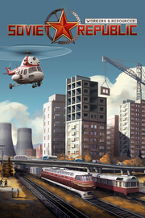

Workers & Resources: Soviet Republic
Detalles
|  | |
| Tiempo de juego | No Jugado |
| Última actividad | Nunca |
| Añadido | 11/13/2024 0:35:38 |
| Modificado | 11/13/2024 1:05:59 |
| Estado de finalización | No Jugado |
| Librería | Playnite |
| Fuente | PORCHE |
| Plataforma | PC (Windows) |
| Fecha de lanzamiento | 6/20/2024 |
| Puntuación de la Comunidad | 90 |
| Puntuación de la Crítica | 81 |
| Puntuación de usuario | |
| Género | Estrategia Simuladores |
| Desarrollador | 3Division |
| Editor | Hooded Horse |
| Característica | Cloud Saves Compat. Parcial Con Mando Cromos De Incluye Editor De Niveles Logros De Préstamo Familiar Un Jugador Workshop |
| Enlaces | Punto de encuentro Discusiones Guías Noticias Página de la tienda PCGamingWiki Logros Workshop |
| Tag | 4X Construcción Construcción de bases Construcción de ciudades Economía Estrategia ETR Gestión Gestión de recursos Gran estrategia Históricos Modificables Mundo abierto Sandbox Simulación Simulador de colonias Supervivencia Tiempo real con pausas Un jugador Valor continuo |
Descripción

Encárgate de todos los aspectos de tu república en este juego de construcción de ciudades con ambientación soviética. La planificación económica te permite controlar todo, desde la extracción de recursos hasta la fabricación de bienes y la oferta de servicios. Úsala para tomar decisiones que tengan un impacto en el día a día de tus ciudadanos y puedas ganarte su lealtad a la nación. Puedes determinar la disponibilidad, la accesibilidad y la calidad de los distintos sectores de una ciudad desarrollada, ya sea construcción, transporte, comercio, salud, educación, entretenimiento, turismo o cualquiera de las otras facetas. Enfréntate a una simulación compleja de cadenas de suministro a escala mundial y busca suelos fértiles, vetas de minerales y tierras viables en las que construir tu nación. Deja que las estaciones de radio se desvivan en alabanzas y que los ciudadanos se regocijen de la gloria de la república soviética.


Hay varias simulaciones complejas funcionando al unísono para dar vida a las ciudades de Workers & Resources: Soviet Replubic. Todo se puede manipular con las acciones correctas: el precio de los bienes en el mercado global, el abastecimiento de agua y electricidad, o la cantidad de calefacción ofrecida durante el invierno. Ajusta los parámetros de tu partida para adaptarla a tu antojo. Da igual si lo tuyo es la ingeniería civil, la planificación urbanística, la economía o la simulación completa, podrás disfrutar de las mecánicas que más te gustan.
- Dirige tu nación usando rublos y dólares para mantener un equilibrio entre el mercado oriental y el occidental. El comercio con naciones de ambos lados del telón de acero te garantizará el acceso a divisas, recursos y tecnología de valor. Aunque la economía planificada sigue un estilo soviético, eres una nación sin alineamiento, por lo que tienes libertad para comerciar con el bloque occidental y el soviético como mejor te beneficie. Siempre puedes permanecer leal a uno de los bandos si lo prefieres, pero ten en cuenta que si te centras en un solo mercado de bienes obtendrás menos beneficios, y cerrar las puertas al otro bando podría privarte de avances tecnológicos útiles.
- Familiarízate con las peculiaridades de la gestión de una cadena de suministros realista con más de 30 productos que adquirir, fabricar y transportar. Las materias primas, los bienes procesados y los desechos tienen lugares específicos de almacenaje, vehículos específicos para su transporte y estructuras específicas para la carga y descarga. Los líquidos se almacenan en depósitos y se mueven con la ayuda de tuberías y bombas, o se cargan en vehículos con cisternas. Los minerales se guardan como agregados en instalaciones de almacenaje y se distribuyen mediante cintas transportadoras, camiones de plataforma y vagones de tren. Por otro lado, los bienes procesados se envían a los almacenes por medio de camiones y vagones cerrados. Organiza tus carretillas para transportes cortos, crea redes complejas de cintas transportadores para no depender de tanto vehículo, o usa trenes para transportar bienes de una ciudad a otra; la gestión de la cadena de suministros es una parte primordial de la nación, así que tendrás que usar todo tipo de vehículos, incluyendo aviones de transporte, trenes de carga y helicópteros de transporte, para asegurarte de que la operación transcurre sin contratiempos.
- Cada carretera, puente, edificio residencial y fábrica se construye desde cero y tiene un coste de recursos diferente en función del tamaño del proyecto. Compra materias primas en el mercado para construir sin demora con la ayuda del trabajo extranjero, o crea tus propias oficinas de construcción y genera empleo para que tus habitantes trabajen en las obras y construyan todo usando materiales locales. Los edificios pueden necesitar cosas como paneles prefabricados, vigas de acero, grava, concreto y otros recursos: prodúcelos y suminístralos de manera local, o impórtalos, si prefieres simplificar el proceso. ¿Serás una república autosuficiente, o explotarás el mercado internacional para expandirte con rapidez?


Una nación no es nada sin su pueblo: trabajan los campos, hornean el pan y operan la maquinaria pesada que mantiene la industria en funcionamiento. Si quieres tener éxito, tienes que asegurarte de que estén felices y sean leales.
- Acompaña a tus ciudadanos a lo largo de su vida y proporciónales bienes esenciales como comida y ropa (y alcohol) mientras te cercioras de que tengan acceso a oportunidades de educación y empleo. Cuidado con los que no tienen lealtad a la república, pues son más propensos a delinquir y rinden menos que los demás. La mayoría de las veces, lo mejor es cortarles el acceso a oportunidades en las que puedan hacer más mal que bien. Vigila la felicidad y la lealtad de tu nación para asegurarte de que no haya muchos que quieran irse. Dales una vida mejor, o usa la propaganda para que se esfuercen al máximo.
- Puedes cubrir las necesidades de los tuyos mediante importaciones o fabricando lo que necesites de manera local gracias a las cadenas de producción. Los cereales se cosechan en los enormes campos y se convierten en pan y bebidas espirituosas en plantas de producción alimenticia y en destilerías. Las fábricas de ropa seguirán produciendo siempre que cuenten con tejidos, que se producen en fábricas textiles a base de cosechas, químicos y agua. Fabrica u obtén todo tipo de bienes, como las necesidades mencionadas, o artículos de lujo, como las radios y los televisores, y crea una cadena de transporte que los lleve de las fábricas a los almacenes y de ahí a las tiendas locales donde se pondrán a la venta para el disfrute de tus ciudadanos.
- Hay muchos servicios esenciales que querrás poner al alcance de tus ciudadanos, como la electricidad, el agua y la calefacción, imprescindibles para sobrevivir. Cada una de ellas tiene sus propias cadenas de suministro que tendrás que mantener. Observa los cambios en la demanda según las estaciones y prepárate para el duro invierno o perderás a muchos habitantes. En cuanto a los estudios, hay distintas instituciones a cargo de la educación primaria y la superior, y esta última brinda más oportunidades de empleo a los ciudadanos y desbloquea el acceso a nuevas tecnologías y producciones para la nación. El entretenimiento está en los parques y teatros locales, pero también en las emisoras de radio y los canales de televisión. Quienes quieran trabajar el bienestar físico, lo podrán hacer en piscinas y pistas deportivas. Asegúrate de que tus ciudadanos tienen todos estos servicios al alcance gracias a un sistema de transporte eficiente y tu población será sana y próspera.


Encargarse del transporte de bienes y ciudadanos por carretera, ferrocarril, aire y mar es vital para tener una república saludable. A medida que tu nación crezca y se desarrollen ciudades en las inmediaciones de los centros de recursos repartidos por mapas enormes, irás expandiendo la red de transporte para mantenerte a la altura de la situación.
- Los autobuses, tranvías, trenes, metros, barcos y aviones proporcionan transporte público para que la gente cubra distancias cada vez mayores para satisfacer sus necesidades en establecimientos lejanos, o para aportar su experiencia en fábricas y minas remotas. Maneja los sistemas interconectados para facilitar el desplazamiento de personas a lo largo y ancho de estas grandes extensiones de tierra. Tendrás que valerte incluso de funiculares y sinuosas carreteras de tierra para facilitar el acceso a los lugares más recónditos de tu república.
- Los camiones, los trenes, los aviones y los barcos de transporte son imprescindibles para mover recursos a largas distancias. Cada tipo cuenta con varias subcategorías que determinan qué tipo de bienes pueden transportar. Tener un acceso limitado a ciertos tipos podría obligarte a explorar sistemas de transporte que tal vez habrías ignorado de no haberte visto en la necesidad. ¿Construirás conexiones en las aduanas de tu frontera para potenciar el comercio con potencias extranjeras?
- Construye aeropuertos a medida, planifica el emplazamiento de señales de tren y diseña intercambiadores para personalizar tus redes de transporte. Las señales de tráfico influyen en los límites de velocidad y los lugares a los que pueden acceder los vehículos, la longitud de las pistas de aterrizaje determinan qué aviones pueden operar, y las estaciones de trenes se pueden construir para pasajeros o mercancías, y pueden tener puntos de acceso para bombas, cintas transportadoras y carretillas con los que mantener las cadenas de suministro funcionando como una maquinaria bien engrasada.
- Da a tus ciudadanos la oportunidad de comprar vehículos para su uso privado, pero vigila quién puede tener acceso a ellos según su nivel educativo y lealtad política. Eso te ayudará a prevenir la plaga de la libertad de movimiento y los atascos. Si planificas bien tu infraestructura y tus redes de transporte, tendrás el control del flujo de los trabajadores y de los recursos.

Workers & Resources: Soviet Republic tiene herramientas dedicadas para mods y en Steam Workshop hay una colección de mods hechos por la comunidad que no para de crecer. Personaliza tu experiencia con edificios y vehículos nuevos para construir la república soviética de tus sueños.